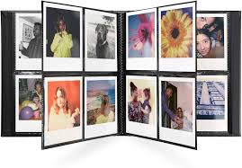
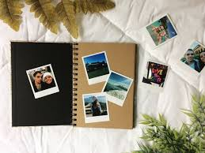
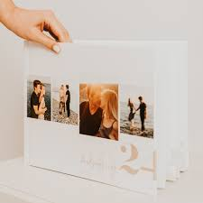

Quem somos
myMémoires é uma ferramenta online que permite guardar as fotografias em álbuns digitais.
Acreditamos que as nossas memórias merecem ser representadas de forma apropriada além do depósito de fotografias a que chamamos 'Galeria'
A nossa plataforma oferece modelos de álbuns predefinidos para que possa selecionar, posicionar e organizar de forma mais personalizada as fotografias que contam a sua história.
Clássico Simples

Clássico Quadruplo

Estilo Polaroid

Linha Temporal
"Só se vê bem com o coração. O essencial é invisível aos olhos."
- Antoine de Saint-Exupéry, O Pequeno PríncipeContatos
Deseja imprimir? Visite-nos
📫 Rua das Memórias, 123
1000-001 Lisboa
Acompanhe o nosso trabalho